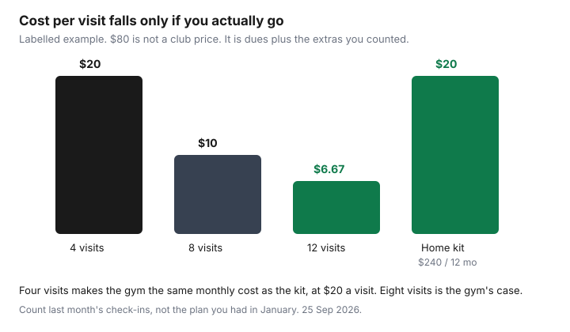

Subscriptions · Canada
Gym Membership vs Home Workouts in Canada: Cancel Smart and Train Cheap
A gym membership that outlasts the habit is a subscription with a locker. The painful range for a lot of Canadian households is the unused $40 to $100 a month, and the true number is larger once parking, childcare, and a personal-training pack nobody books are on the same piece of paper. Home workouts are cheaper only when the kit is small and you will use it. The decision is a visit count and a cancel date, not a speech about motivation.
If the club is GoodLife, the exit steps are the GoodLife cancel guide. If you joined in Ontario and you are still inside 10 days of the written contract, or the contract is a prepaid personal development service of $50 or more, use the Ontario cooling-off guide before you negotiate a buyout. A discount club’s fee lines are the budget-gym checklist. This page is the stay-or-leave math around those rules.
Disclosure: Home fitness equipment and free tiers of workout apps are offer types. Saving Optimizer may earn a commission if we later add a partner link. We do not currently claim a gym, equipment, or app partnership. Education only. A free app tier is enough until the visit count says otherwise. This is not fitness or medical advice.
Key takeaways
- True monthly cost is dues, plus parking or transit, plus childcare you pay only because of the visit, plus personal training you are not using. The advertised dues are the smallest line.
- On a labelled $80 true month, four visits is $20 each. A $240 basic kit is $20 a month over a year. The gym wins on cost only when you go often enough to beat that.
- A community centre or municipal pass is the middle. In Ontario, municipal and provincial facilities, the YMCA, and member-owned clubs are outside the Consumer Protection Act cooling-off described on ontario.ca.
- Cancel on the notice in your contract, not the day motivation drops. GoodLife corporate-program FAQs describe one month’s notice on bi-weekly or monthly plans. Your agreement wins.
- A small kit covers most goals: a mat, a pair of adjustable dumbbells or bands, and a free app plan. Buy it after you cancel, not as a second subscription beside the dues.
- A seasonal split is legitimate: outdoors in the mild months, a short indoor pass only for the winter you will use. Do not sign a year in April to solve January.
True monthly cost: dues + parking + childcare + unused personal training
Open the last statement and write five lines. Dues, the number that leaves the account. Parking or transit you pay only on gym days. Childcare you pay only so you can be at the club. Personal training, a class pack, or a locker you have not used in 30 days. Anything the club added, such as a towel, a key fob rental, or an annual fee. The sum is the true month. A $49 bi-weekly draft is not $49 a month. Twenty-six drafts of $49 is $1,274 a year before tax, about $106 a month, before parking.
The unused personal-training pack is the line people defend. “It is already paid” is true for the sessions that expire this month and false for the renewal. If the pack renews and the sessions went unused, cancel the pack on its own notice even if you keep the membership. If you keep the membership and the pack, you are paying twice for a habit you are not having. Childcare works the same way. If a visit requires a paid hour of care, that hour is part of the workout’s price. A home session after the children are in bed does not have that hour.
Do not use a national average gym price. Clubs in Toronto, Calgary, and a small city are not the same product. The number on your PAD is the number. Tax is extra where the contract says so. Put the true month next to the membership on the subscription sheet so it is visible beside Netflix, not buried in “cash spending.”
Attendance break-even: visits needed to beat a basic home setup
Count check-ins for the last four weeks, from the club app or from memory you trust. Divide the true monthly cost by that count. That is the price of a visit. Then price a basic home setup you would actually use for a year. The labelled kit below is $240. Spread over 12 months it is $20 a month, whether you train four times or twelve. The gym has to beat $20 a month on use, not on the tour.
| Visits last month | Gym cost per visit | Against a $20 home month |
|---|---|---|
| 4 | $20 | Same monthly cost as the kit, at $20 a visit. The kit wins if you will use it and you are tired of the drive. |
| 8 | $10 | The gym is the cheaper workout if you will keep this pace. The kit is still right if the $80 is mostly unused training and parking. |
| 12 | $6.67 | You are using the membership. Keep it unless the extras, not the dues, are the problem. |
| 0 to 2 | $40 or more | Cancel on the notice period. Do not buy a boutique home gym to punish yourself. Start with the small kit. |

Replace $80 with your true month and do the division again. The chart is the shape of the decision, not a finding that gyms cost $80. If your true month is $40 and you go eight times, the visit is $5 and a home kit is a hobby purchase, not a saving. If your true month is $120 and you went twice, no kit math will rescue the membership. Cancel first.
Community centre and municipal gym passes as middle options
Between a commercial club and a rack in the basement is the city’s own gym: a community centre, a municipal recreation pass, or a drop-in lane. These are often cheaper, closer, and sold in seasons rather than in a year you cannot see the end of. Prices are local. Read your city’s recreation guide. Do not copy another city’s drop-in fee into your budget. A 10-visit punch card is a useful test. If you do not finish the card, you have your attendance answer without a PAD.
Ontario’s consumer page on joining a gym, updated 12 Aug 2021 and used for the cooling-off guide on 24 Sep 2026, says the personal-development rules do not apply to a not-for-profit such as the YMCA, a member-owned club, or a facility run by a municipality or the province. The 10-day cooling-off is for the commercial prepaid contract of $50 or more. A community-centre membership still has terms. Read the refund line before you buy a six-month pass in November. The missing statutory window is a reason to buy the shorter pass, not a reason to skip reading.
Use the centre as the winter plan if the building is on a trip you already make. A centre that adds 25 minutes of driving has recreated the parking problem. The middle option works when it is actually in the middle of the week you have.
Cancel timing aligned with contract notice periods
Motivation drops on a Tuesday. Contracts end on a notice period. If you wait until you are angry, you often pay another month because the notice had already started, or you miss a deadline and the contract renews. Ontario’s page says covered contracts must end after one year, and a renewal notice has to arrive at least 30 days and not more than 90 days before the end. Silence can renew the contract if that notice was done properly. Calendar the notice window when you join, not when you want out.
GoodLife’s own contact page does not print one national notice. Employer-program FAQs we read for the GoodLife guide describe paid-in-full as a one-year commitment and bi-weekly or monthly plans as continuing until you give one month’s notice in the Member Portal. Confirm the sentence on your agreement. A buyout is only useful if the written number is smaller than the dues left. The labelled example on the GoodLife page is the comparison. Do not stop the bank draft first. The Financial Consumer Agency of Canada’s point, cited there, is that cancelling a pre-authorized debit does not cancel the contract.
Give notice in the channel the contract names, while you can still log in. Ask for the last draft date in writing. Keep going to the club through the notice if you want. The visits are already paid. Stopping early does not shrink a notice you have already triggered. If you are inside Ontario’s 10 days from receiving the written contract, that statutory cancel comes before a notice-period conversation.
Minimal home kit that covers 80 percent of goals without boutique prices
Most goals that sent a middle-aged household to a gym are strength twice a week, a bit of conditioning, and a place to be consistent. A mat, a set of resistance bands or one pair of dumbbells you can actually lift, and a sturdy chair cover a large share of that. Add a pull-up bar only if the doorway and your shoulders agree. Skip the mirrored studio, the connected bike, and the annual content subscription that replaces the gym dues with a new dues line. A free tier of a workout app is enough for a plan. If the app’s paid tier is the only way the household will train, price it as a subscription on the same sheet, and cancel it with the same 30-day test.
The $240 in the chart is a labelled ceiling for that small kit, not a shopping list with brand names. Spend less if a mat and bands are enough. Do not spend more in the same week you cancel the gym. Use what you own for a month. Then replace the one thing that is stopping you, with cash, not with a financed machine. Equipment bought on a “pay later” plan is a subscription you cannot cancel by skipping a workout.
Injuries and medical limits are a clinician’s question, not a saving tip. If the reason you joined the gym was a program from a physiotherapist, do not swap it for a random app. The saving in that case is unused club amenities, not the sessions you were told to do.
Seasonal hybrid: outdoor spring/summer, indoor pass only in winter
Canada gives you a real split. From the time the paths are clear until the weather turns, walking, running, and bodyweight work outside can replace a club without a second product. Buy the indoor option when the season changes, for the months you will go, from a community centre or a month-to-month club whose notice you have read. A year-long contract signed in April to “be ready for winter” is how April’s optimism bills through the following March.
Write the switch dates now. A useful pair for a lot of households is outdoors from May through September, and an indoor pass from October through March, if the indoor pass can actually be that short. If the only indoor option is a one-year commitment, compare a year of that commitment with six months of a drop-in or a punch card plus the home kit. The hybrid fails when “winter pass” becomes “we never cancelled in April.” Put the cancel date on the calendar the day you join, aligned with the notice period, in the same way you calendar a Game Pass renewal you do not intend to keep.
Sources & date stamps
- Ontario.ca, “Joining a gym or fitness club,” updated 12 Aug 2021, used 24 Sep 2026 in the cooling-off guide and again here: prepaid personal development services of $50 or more, 10-day cooling-off from the written contract, contracts end after one year, renewal notice 30 to 90 days before the end, initiation fee at most twice the annual fee, monthly instalments with up to a 25 percent premium. Exceptions include the YMCA, member-owned clubs, and municipal or provincial facilities.
- GoodLife contact and corporate-program FAQs, as summarized in the GoodLife guide from pages used 24 Sep 2026: portal, club, or 1-800-387-2524 weekdays 9 a.m. to 5 p.m. Eastern; paid-in-full versus one month’s notice on the bi-weekly or monthly plans those FAQs describe; do not stop PAD first; a buyout only if the written figure beats the dues left.
- The $80, $20, $10, $6.67, and $240 figures are a labelled example. They are not a Canadian average and not your dues.
Frequently asked questions
What counts in the true monthly cost?
Dues, parking or transit you pay only for the visit, childcare you pay only so you can be there, and personal training or extras you are not using. A bi-weekly draft is not a monthly price. Multiply by the drafts in the year.
How many visits make the gym cheaper than a home kit?
On the labelled example, an $80 true month is $20 a visit at four visits, the same as a $240 kit spread over a year. Eight visits is $10. Use your dues and your last month of check-ins. The $80 is not a club’s price.
Does Ontario’s 10-day cooling-off apply to a community centre?
Ontario’s gym page says the personal-development rules do not apply to municipal or provincial facilities, the YMCA, or a member-owned club. A commercial prepaid contract of $50 or more is the 10-day case. Read the centre’s own refund line.
When do I give notice?
On the date your contract requires, not the day you feel finished. GoodLife corporate-program FAQs describe one month’s notice on bi-weekly or monthly plans. Your agreement wins. Do not stop the bank draft first.
Is a winter-only pass legitimate?
Yes, if the pass can actually be short. Outdoors in the mild months and an indoor pass for the winter you will use is the split. A one-year contract signed in April is how the mild months get billed too.